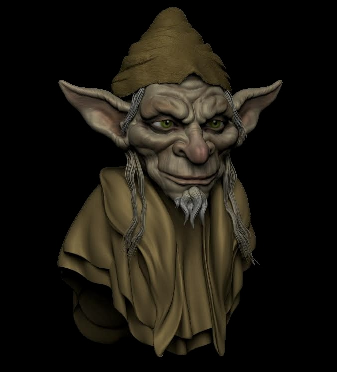
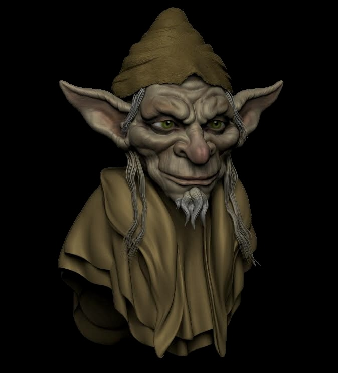
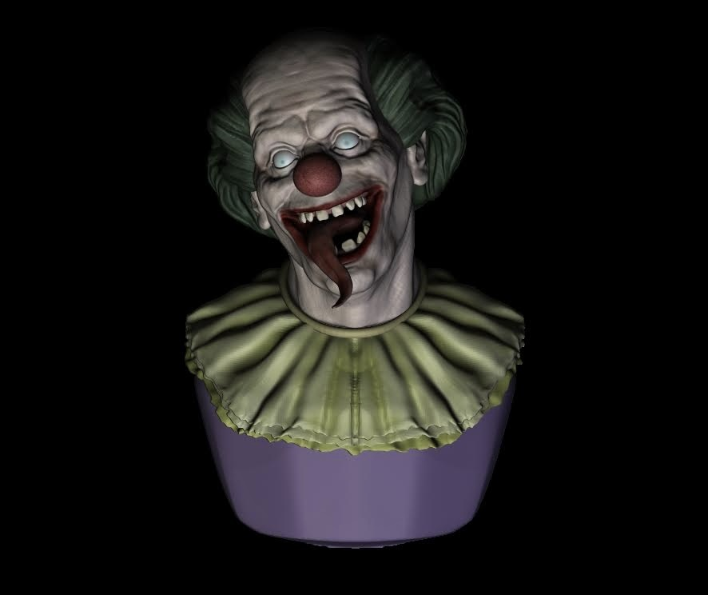
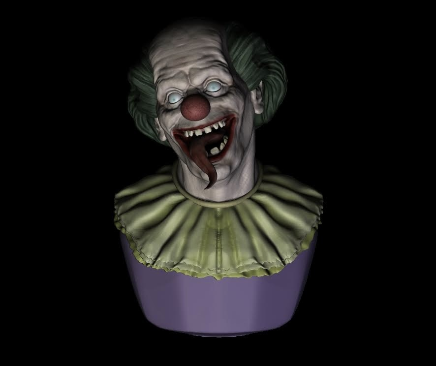
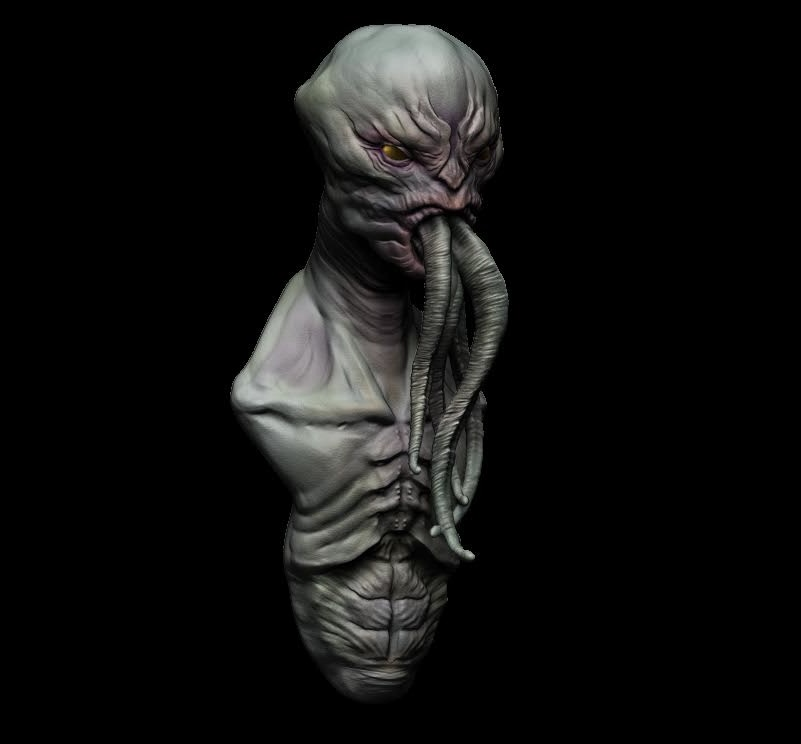
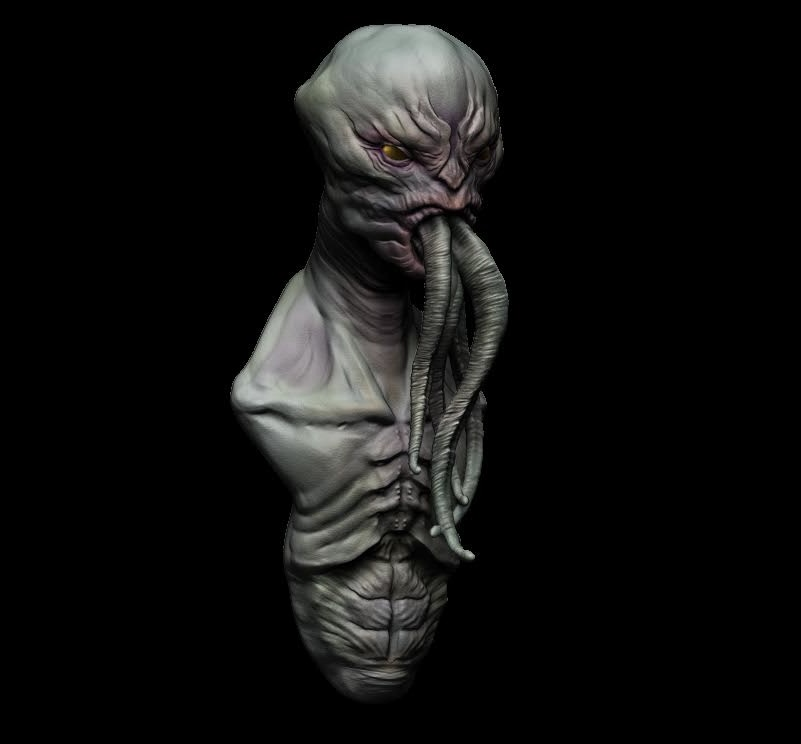

Speed-Sculpt
En esta sección, encontrarás una serie de esculturas creadas en tiempos limitados de 2 a 3 horas, donde la espontaneidad y la técnica se combinan para dar vida a formas y conceptos en tiempo récord. Cada pieza es un desafío de rapidez y precisión, demostrando la habilidad de la artista para capturar la esencia de una idea en un corto período de tiempo. Estos ‘speed sculpts’ son una muestra del proceso creativo, donde lo importante no es solo el resultado final, sino también la capacidad de experimentar y explorar nuevas formas de expresión en un espacio reducido.
Dos tipos de goblins creados en un speed-sculpt, el primero de ellos gano el premio Tadeo de Oro en Ligthbox Academy. El tema del concurso era "Criatura Medieval".
En este octavo desafio de Speed-Sculpt en la academia Ligthbox-Academy el tema fue hacer una escultura en menos de tres horas que fuerea capaz de transmitir una emoción o sentimiento. Ganadora del Tadeo de Oro en esa edición.
 



 

 
